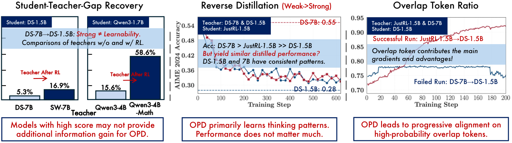

Think of an apprentice writing a draft while a master pencils a mark on every word. If both already reach for the same few words, the marks nudge the apprentice toward the master's taste. If the master is simply a bigger copy of the same apprentice, there is nothing new to learn.
수련생이 초안을 쓰고 스승이 단어마다 연필로 표시하는 장면을 떠올리자. 둘이 이미 같은 몇 단어를 고르고 있다면 표시가 스승의 취향 쪽으로 이끈다. 스승이 같은 수련생의 더 큰 복사본일 뿐이라면 새로 배울 것이 없다.
The paper in one figure한 장으로 보는 논문
Benchmark score does not decide what OPD transfers. Teachers that gained skills through extra RL are learned far better than same-pipeline giants.
벤치마크 점수는 OPD가 무엇을 전달하는지 정하지 않는다. RL로 새 능력을 얻은 교사가 같은 파이프라인의 큰 모델보다 훨씬 잘 전달된다.

- Test the teacher.교사를 시험한다.Pair one student with teachers that differ in thinking pattern or in post-training.한 학생에 사고 방식이나 사후 학습이 다른 교사들을 짝지어 본다.
- Watch overlap.겹침을 본다.Track shared top-k tokens, their advantage, and the entropy gap during training.학습 중 공통 top-k 토큰, 그 우위, 엔트로피 격차를 추적한다.
- Repair.고친다.Cold-start SFT on teacher rollouts, and prompts matched to the teacher's post-training data.교사 롤아웃으로 콜드스타트 SFT를 하고, 교사 사후 학습 데이터에 맞춘 프롬프트를 쓴다.
Same size or bigger: no new knowledge크기가 커도 새 지식은 없다
Post-RL teachers transfer several times more of their lead. Recovery is the fraction of the teacher–student gap closed.
RL을 더 거친 교사는 우위를 몇 배 더 전달한다. 회복률은 교사–학생 격차를 메운 비율이다.
Mechanism: overlap tokens carry the gradient원리: 공통 토큰이 그래디언트를 나른다
Successful runs are the ones where overlap keeps rising. Training only on shared tokens matches full top-k OPD; non-shared tokens are much weaker.
성공한 실행은 겹침이 계속 오르는 실행이다. 공통 토큰만으로 학습해도 전체 top-k OPD와 같고, 공통이 아닌 토큰만으로는 훨씬 약하다.
| Setting설정 | Teacher교사 | Outcome결과 |
|---|---|---|
| OPD → DS-1.5B | JustRL-1.5B | >80% gap closed |
| OPD → DS-1.5B | R1-Distill-7B | no gain |
| Reverse: JustRL-1.5B student | R1-Distill-1.5B / 7B | both regress (AIME24 ≈ 0.3) |
| Overlap ratio, successful run | JustRL-1.5B | 72% → 91% |
| Reward AUROC (correct vs wrong) | JustRL / R1-7B | 0.73 / 0.75 |
The cost: reward fades with depth대가: 깊어질수록 보상이 흐려진다
The teacher's edge nearly vanishes on long student prefixes. Off its usual path, it scores worse.
학생의 접두어가 길어지면 교사의 우위는 거의 사라진다. 자기 경로를 벗어나면 채점이 나빠진다.
Before distilling, log overlap and entropy gap early: flat overlap means stop and cold-start with SFT instead of adding steps. Choose teachers that learned something new, not just bigger ones.증류 전에 겹침과 엔트로피 격차를 초반에 기록하자. 겹침이 평평하면 스텝을 늘리지 말고 SFT로 콜드스타트하자. 그냥 큰 모델이 아니라 새로 배운 교사를 고르자.
Experiments are mostly math reasoning on 1.5B–7B models, and the local-geometry explanation for failure is an untested hypothesis. The Figure 1 recovery values are read from the figure, not a table.실험은 대부분 1.5B–7B 모델의 수학 추론이고, 실패를 설명하는 국소 기하 가설은 검증되지 않았다. Figure 1의 회복률은 표가 아니라 그림에서 읽은 값이다.